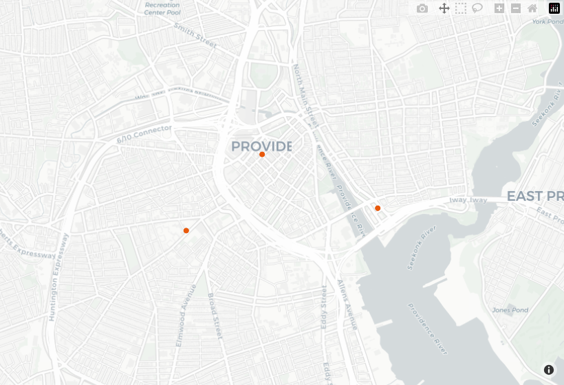

R client for the Close API. Get travel times from every US census block to nearby places, on foot, by bike, and by public transit. This is the data behind close.city, read over the Close API.
Documentation: https://henryspatialanalysis.github.io/closecity-r/
A first call
You make requests through a client object. Feature results come back as sf objects, so you can map them right away.
library(closecity)
# The key (ck_live_) comes from https://account.close.city (5,000 free tokens,
# no card). Or set the CLOSECITY_KEY environment variable and call
# close_client() with no argument.
close <- closecity::close_client(api_key = "ck_live_your_key") # use your own key hereclose_map() draws any result on an interactive CARTO Positron basemap in one line — bright hoverable points, or blocks shaded by travel time, zoomed to the data. (The image below is a snapshot; in a session or the tutorials the map is live and pannable.)
# Supermarkets within a 1.5 km walk of a point (type 30 is grocery stores):
supermarkets <- close$pois_search(lat = 41.823, lon = -71.412, radius_m = 1500, type = 30)
closecity::close_map(x = supermarkets, color = "#e8590c", label = "name")
Catalog and lookup routes are free and need no key:
close$modes() # walk, bike, transit
#> mode_id mode description
#> 1 1 walk Walking
#> 2 2 bike Biking
#> 3 3 transit Public transit
close$places(q = "Providence") # a city name to its GEOID and centre
#> Simple feature collection with 9 features and 5 fields
#> Geometry type: POINT
#> Dimension: XY
#> Bounding box: xmin: -111.8133 ymin: 32.34238 xmax: -71.35821 ymax: 42.28133
#> Geodetic CRS: WGS 84
#> name geoid state lon lat
#> 1 Providence 4459000 RI -71.41872 41.82301
#> 2 Providence 4962360 UT -111.81331 41.70341
#> 3 Providence Village 4859748 TX -96.95432 33.23890
#> 4 Providence 2163372 KY -87.75094 37.39935
#> 5 Providence 0162688 AL -87.77611 32.34238
#> 6 East Providence 4422960 RI -71.35821 41.80049
#> 7 New Providence 3451810 NJ -74.40343 40.69964
#> 8 Lake Providence 2241400 LA -91.18247 32.81322
#> 9 New Providence 1956415 IA -93.17162 42.28133
#> geometry
#> 1 POINT (-71.41872 41.82301)
#> 2 POINT (-111.8133 41.70341)
#> 3 POINT (-96.95432 33.2389)
#> 4 POINT (-87.75094 37.39935)
#> 5 POINT (-87.77611 32.34238)
#> 6 POINT (-71.35821 41.80049)
#> 7 POINT (-74.40343 40.69964)
#> 8 POINT (-91.18247 32.81322)
#> 9 POINT (-93.17162 42.28133)Key terms
- Census block. The smallest area the Census Bureau publishes. Each one has a 15-digit id called a GEOID.
-
Destination type. A category of place, such as grocery stores or libraries. Each type has a numeric id. Look them up with
close$destination_types(). - Mode. How someone travels: walk, bike, or transit.
- Isochrone or catchment: the area you can reach starting from a point within a time limit, by a selected travel mode.
Choosing an output
Set output on the client, or per call:
-
output = "spatial"(the default) returns ansfobject where geometry applies and adata.frameotherwise. Block routes join census-block boundaries with thetigrispackage, downloaded once and cached. -
output = "tabular"returns adata.framefor every route and never downloads boundaries. Reach for it when you only want the numbers. -
output = "raw"returns the underlyingclose_reply, with the parsed body on$dataand the token counts alongside.
close$output <- "raw"
reply <- close$block_summary(geoid = "440070008001068", mode = "walk")
str(reply$results, max.level = 2, list.len = 3)
#> List of 33
#> $ :List of 3
#> ..$ dest_type_id: int 1
#> ..$ mode : chr "walk"
#> ..$ travel_time : num 10
#> $ :List of 3
#> ..$ dest_type_id: int 5
#> ..$ mode : chr "walk"
#> ..$ travel_time : num 26
#> $ :List of 3
#> ..$ dest_type_id: int 6
#> ..$ mode : chr "walk"
#> ..$ travel_time : num 22
#> [list output truncated]Handling errors
Failed requests raise a classed condition. Catch the base close_api_error, or a specific one such as close_api_tokens_exhausted.
tryCatch(
close$block_summary(geoid = "000000000000000"),
close_api_error = function(e) message(sprintf("%s (%d)", e$slug, e$status))
)
#> block-not-found (404)The client does not retry automatically. On a rate-limit or service-unavailable error, wait e$retry_after seconds (from the Retry-After header) and retry the request yourself.
Reference
- Package documentation: https://henryspatialanalysis.github.io/closecity-r/
- API docs and guides: https://docs.close.city
- Interactive API: https://api.close.city/docs
- Machine-readable contract: https://api.close.city/openapi.json